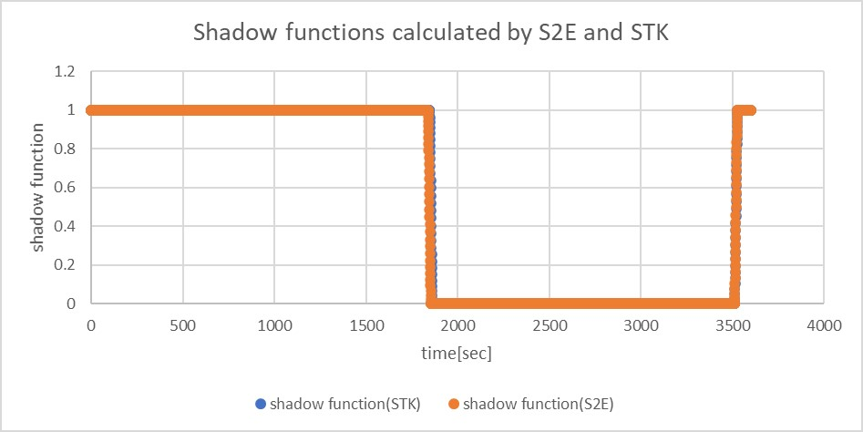

Specification for Solar Radiation Pressure Environment
1. Overview
1. Functions
SolarRadiationPressureEnvironmentcalculates solar power flux at the spacecraft's position, including the earth's eclipse effect.
2. Related files
src/environment/local/solar_radiation_pressure_environment.cpp, .hppSolarRadiationPressureEnvironmentclass is defined.
src/environment/local/local_environment.cpp, .hppSolarRadiationPressureEnvironmentclass is used here as a member variable ofLocalEnvironmentclass.
3. How to use
- Call
UpdateAllStatesfunction to calculates solar power flux and updates the eclipse flag. - Users can get calculated values by using the following functions:
GetPressure_N_m2: Return solar pressure (N/m2) with eclipse effect for SRP disturbance calculation.GetPowerDensity_W_m2: Return solar power density (W/m2) with eclipse effect for Electrical Power System calculation.GetPressureWithoutEclipse_Nm2: Return solar pressure (N/m2) without eclipse effect.GetSolarConstant_W_m2: Return solar constant value 1366 [W/m2]GetShadowCoefficient: Return shadow function $\nu$.- When the spacecraft is in umbra, $\nu=0$.
- When the spacecraft is in sunlight, $\nu=1$.
- When the spacecraft is in penumbra, $0<\nu<1$.
GetIsEclipsed: Return eclipse or not
2. Explanation of Algorithm
1. Pressure calculation in UpdateAllStates function
1. overview
- Solar radiation pressure at the position of the spacecraft is calculated by using the inverse square law.
2. inputs and outputs
- Constants
- Solar constant: $P_{\odot} = 1366$ W/m2
- Speed of light: $c = 299792458$ m/s
- Astronomical Unit: $AU = 149597870700$ m
- Input variables
- The sun position in the body-fixed frame of the spacecraft: $\boldsymbol{r}_{\odot-sc}$ m
- Unbold $r_{\odot-sc}$ is the norm of $\boldsymbol{r}_{\odot-sc}$
- The sun position in the body-fixed frame of the spacecraft: $\boldsymbol{r}_{\odot-sc}$ m
- Output
- Solar radiation pressure: $P_{sc}$ N/m2
3. algorithm
\[ P_{sc}=\frac{P_{sun}}{c}\left(\frac{AU}{r_{\odot-sc}}\right)^{2} \]
4. note
- It is known that the solar constant value varies between 1365 and 1367 W/m2, but it is handled as a constant value in S2E.
2. CalcShadowCoefficient function
1. overview
- This function determines that the spacecraft is inside the eclipse of the earth or not.
2. inputs and outputs
- Constants
- Radius of the earth: $r_{\oplus}=6378137$ m
- Radius of the sun: $r_{\odot}=6.96\times10^{8}$ m
- Input variables
- The sun position in the body-fixed frame of the spacecraft: $\boldsymbol{r}_{\odot-sc}$ m
- The earth position in the body-fixed frame of the spacecraft: $\boldsymbol{r}_{\oplus-sc}$ m
- Output
- none
3. algorithm
\[ \begin{align} A_{\odot} &= \sin^{-1}\left(\frac{r_{\odot}}{r_{\odot-sc}}\right)\\ A_{\oplus} &= \sin^{-1}\left(\frac{r_{\oplus}}{r_{\oplus-sc}}\right)\\ \delta &= \cos^{-1}\left(\frac{r_{\odot-sc}}{r_{\oplus-sc}}\cdot \boldsymbol{r}_{\oplus-sc}\cdot(\boldsymbol{r}_{\odot-sc}-\boldsymbol{r}_{\oplus-sc})\right)\\ \end{align} \]
4. note
- See the following description of the
CalcShadowFunctionfor the calculation of the shadow function.
3. CalcShadowFunction function
1. overview
- This function calculates the degree of the Sun's occultation by the Earth.
- The base algorithm is referred to Satellite Orbits chapter 3.4.
2. inputs and outputs
- Input
- The apparent radius of the Sun: $A_{\odot}$
- The apparent radius of the Earth: $A_{\oplus}$
- The apparent separation of the centers of the Sun and the Earth: $\delta$
- The angle between the center of the Sun and the common chord: $x$
- The length of the common chord of the apparent solar disk and apparent celestial disk: $y$
- Output
- The shadow function: $\nu$
3. algorithm
- If the occultation is total, then $\nu=0$.
- If the occultation is partial but maximum, then $\nu=1-\left(\frac{A_{\oplus}}{A_{\odot}}\right)^2$
- If the occultation is partial, then $\nu = 1-\frac{S}{\pi A^2_{\odot}}$
- S is given by the following calculation.
\[ S=A_{\odot}^2\arccos\left(\frac{x}{A_{\odot}}\right)+A_{\oplus}^2\arccos\left(\frac{\delta-x}{A_{\oplus}}\right)-\delta\cdot y \]
- In other cases, since it means that no occultation takes place, then $\nu=1$.
3. Results of verifications
1. Verification of pressure calculation in UpdateAllStates function
1. overview
- The pressure calculation above is verified.
2. conditions for the verification
- A test code written in the
SRPEnvironment.cppis used. - The sun position and the earth position are fixed, and the spacecraft position varies as following values.
- Sun-spacecraft distance: 149604270700m - 153797870700m
- Earth-spacecraft distance: 6400000m - 4200000000m
3. results
- The pressure calculation is verified.
2. Verification of calculation in CalcShadowFunction function
1. overview
- The calculation of the shadow function is verified.
- The result of the
CalcShadowFunctionof S2E is compared with the results of thesolar intensityof STK.
2. conditions for the verification
-
Orbit
- The orbit of the ISS was used for verification.
- The TLE data are as follows.
1 25544U 98067A 20250.86981481 .00000008 00000-0 82464-5 0 9991 2 25544 51.6470 304.2415 0002004 86.5035 251.6018 15.49214189244677 -
Simulation time
- The simulation time is as follows.
//Simulation start date，[UTC] StartYMDHMS=2020/09/13 12:00:00.0 //Simulation finish time，[sec] EndTimeSec=3600
3. Results
- The calculation of the shadow function is verified. 
4. References
- Montenbruck, O., Gill, E., & Lutze, F. (2002). Satellite orbits: models, methods, and applications. Appl. Mech. Rev., 55(2), B27-B28.